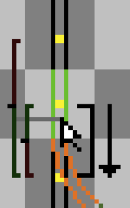
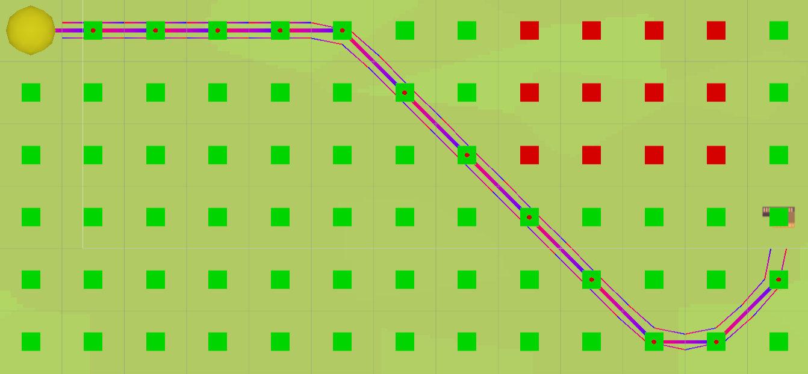
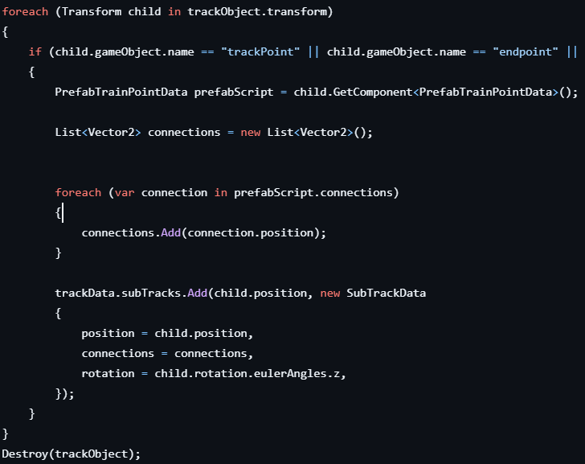

GlacialRailways

About
GlacialRailways is a 2D pixel art game where the player needs to build railways to connect different buildings to make resources and sell them to make money. The game is still in early development, but the goal is to make a fun and relaxing game where the player can build their own railway empire.
RailWays

The railway building is one of the core features of this game. This means it needs to feel smooth and work with no issues. After some brainstorming and testing, we finally came to the conclusion that a modification of A* pathfinding is the best and smoothest way to implement the railway building. The reason we chose grid-based A* pathfinding is because it's confined to a grid. This makes it so that the later deletion of tracks will be easier to implement. It also makes the intersections easier because there will be a limited amount of intersections.

2 Tracks Code

This is some code showing how we calculate the two tracks in one tile. Currently, we do this by spawning a prefab we made earlier and going through all points to see which point it is connected to. Then, we store this data and send it back to the main point. Spawning the prefab is not the most efficient way, but it is an easy fix for some test tracks.
Learned
This is the project I'm currently working on. I've learned that it is crucial to think through every little detail that makes up a mechanic. When you don't know exactly what you want from a complex mechanic, there are bound to be things you miss. For example, you might forget that your character needs to jump, only realizing it after you've built the movement system without gravity in mind. Even the smallest oversight can take a long time to fix.
Extra Info
Devs: 2 Artists: 1 Current Development time: 1 month Engine: Unity We are currently transitioning from the planning phase to the development phase.